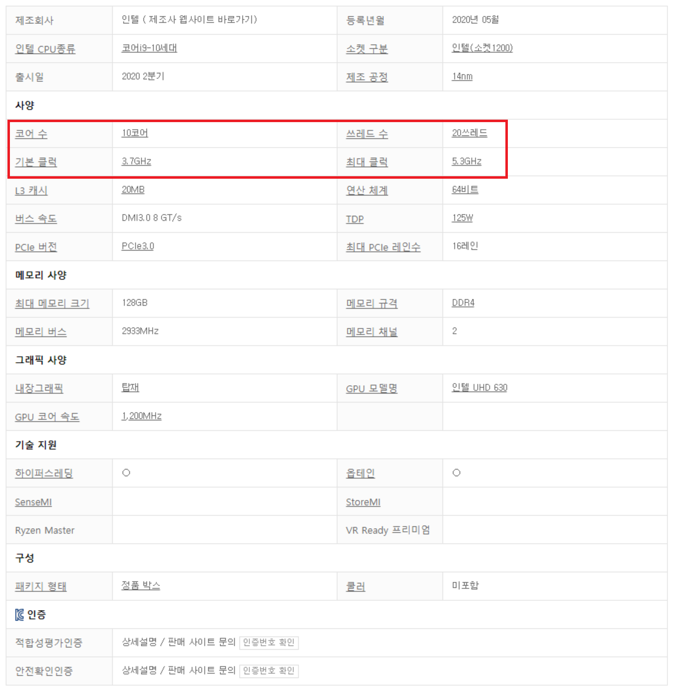

CPU
CPU(Central Processing Unit)는 컴퓨터 시스템을 통제하고 프로그램의 연산을 실행하고 처리하는 가장 핵심적인 컴퓨터의 제어 장치, 혹은 그 기능을 내장한 칩을 말합니다.
컴퓨터 안의 중앙 처리 장치는 외부에서 정보를 입력 받고, 기억하고, 컴퓨터 프로그램의 명령어를 해석하여 연산하고, 외부로 출력하는 역할을 합니다.
기본 구성으로는 CPU에서 처리할 명령어를 저장하는 역할을 하는 프로세서 레지스터, 비교, 판단, 연산을 담당하는 산술논리연산장치(ALU), 명령어의 해석과 올바른 실행을 위하여 CPU를 내부적으로 제어하는 제어부와 내부 버스 등이 있습니다.
Intel i9-10900K를 예시로 설명하겠습니다.
i9 은 제품군을 분류하기 위한 용도로써 i3 은 기본형, i5 은 중급형, i7 은 고급형, i9 은 전문가용 으로 볼 수 있습니다.
10900K에서 만의 자리와 천의 자리는 세대를 의미합니다. 10000번대는 10세대 9000번대는 9세대 8000번대는 8세대 입니다.
백의 자리부터는 성능을 의미합니다. 높은 숫자일수록 더욱 고성능 CPU임을 의미합니다.
단, 주의해야 할 점은 숫자를 비교할때에는 같은 자리수에서만 비교해야 정확한 비교 지표로써의 의미를 갖게 됩니다.
따라서 단순 숫자만으로 10600과 9900을 비교하기에는 무리가 있습니다. 이를 비교하기 위해서는 Intel에서 제공하는 공식 정보 혹은 공신력 있는 개인 혹은 기관에서 측정한 자료를 통해 비교하여야 합니다.
마지막으로 숫자 뒤의 알파벳은 비교적 다양한 의미를 내포하고있지만, 일반적으로 용도를 뜻합니다. 다음은 알파벳의 의미를 정리한 표입니다.
정보 출처
이외에 커피레이크, 카빈레이크, 아이스레이크 등의 단어는 각 세대별로 붙여진 별명입니다.
| 알파벳 | 간단설명 | 내용 |
|---|---|---|
| 없음 | 기본 | 일반 PC용 CPU입니다. 오버클럭이 불가능합니다. |
| K | 배수락 해제 | 제조사에서 설정한 배수(CPU 클럭제한)을 해제한 모델입니다. 오버클럭이 가능한 일반 PC용 CPU입니다. |
| X | 익스트림 에디션 | 일반 모델보다 코어가 많고 고사양이며 배수락이 해제되어있어 오버클럭이 가능합니다. |
| M | 모바일 | 저전력이며 성능도 낮아 발열이 적어서 노트북에서 주로 사용하는 CPU입니다. |
| U | 모바일 저전력 | 태블릿 및 울트라북에 사용되며 아주 낮은 전력소모가 특징입니다. 납땜으로 장착하여 교체가 불가합니다. |
| S | 저전력 | 데스크톱용 저전력 모델입니다. |
| T | 저전력 | S 모델보다 성능, 전력소모, 발열히 현저히 낮은 데스크톱용 저전력 모델입니다. |
| L | 저전력 | 저전력 모델입니다. |
| Y | 초저전력 | 넷북 및 태블릿에서 주로 사용되는 초저전력 모델입니다. |
| MX/XM | 모바일 익스트림 | 고성능 노트북에 사용되는 CPU입니다. |
| HQ | 모바일 고성능 쿼드코어 | 8세데 이전의 i5/i7이라도 쿼드코어 라는 의미입니다. 고성능 게이밍 노트북에서 주로 사용되며 8세데부터 i5 또는 i7으로 코어 구분이 가능하여 현재는 사용되지 않습니다. |
| HK | 배수락 해제 모바일 고성능 | 오버클럭이 가능한 게이밍 노트북에서 사용되는 CPU입니다. |
| P | 내장그래픽 없음 | 내장그래픽이 없고, CPU의 발열이 적은 모델입니다. |
| DU | 모바일 저전력 | U모델과 비교하여 내장그래픽이 약간 낮은 모델을 지칭합니다. |
| R | Iris내장그래픽 탑재 | Intel의 대표 내장그래픽인 Intel HD Graphics 대신 Iris 내장그래픽이 들어간 모델입니다. 맥북에서 주로 사용합니다. |
| E | 임베디드 | 특수 목적의 산업용 데스크톱에서 사용되는 모델입니다. |
| G | 인텔 CPU + 라데온 내장 그래픽 | 인텔 CPU에 AMD Vega 내장그래픽이 탑재된 모델입니다. |
| F | 내장그래픽 없음 | 일반모델에서 원가 절감을 통해 저렴하게 판매하기 위한 내장그래픽을 제외한 모델입니다. |
AMD Ryzen9 5900X를 예시로 설명하겠습니다.
AMD Ryzen은 AMD사의 CPU임을 의미합니다.
Ryzen뒤에 붙는 숫자는 제품군을 의미합니다. 3은 보급형, 5는 중급형, 7은 고급형, 9는 전문가용을 의미합니다.
5900에서 천의 자리는 세대를 의미합니다.
백의 자리는 CPU의 성능을 의미합니다. Intel CPU와 마찬가지로 동일 세대가 아닌 다른 세대의 CPU와 백의 자리 숫자만으로 성능 차이를 논하기엔 무리가 있습니다. 해당 경우에서 정확한 비교를 원한다면 AMD 혹은 공신력 있는 개인이나 기관에서 발표한 자료를 참고하면 됩니다.
다음은 숫자 뒤에 붙는 알파벳의 의미를 나타낸 표입니다.
정보 출처
이외에 버미어, 베르메르 등의 단어는 각 세대별로 붙여진 별명입니다.
| 알파벳 | 간단설명 | 내용 |
|---|---|---|
| 없음 | 일반 | 일반적인 데스크톱에 주로 사용되며 오버클럭이 가능합니다. |
| B | 비즈니스 | 완제품에 들어가는 비즈니스 모델의 CPU입니다. |
| E | 저전력 CPU | 데스크톱 저전력 사용 모델의 CPU입니다. |
| T | 저전력 CPU | 모바일 저전력 사용 모델의 CPU입니다. |
| P | 모바일 CPU | 모바일 저전력 사용 모델의 CPU입니다. |
| M/MX | 모바일 CPU | 노트북 또는 모바일에 사용되는 CPU입니다. |
| X | 성능이 향상된 CPU | 높은 오버클럭을 목적으로 만들어진 모델로 일반 모델보다 더 높은 성능의 오버클럭이 가능한 모델입니다. |
| WX | 워크스테이션CPU | X모델에 비해 코어수가 더 많지만 클럭은 더 줄어든 모델입니다. |
| G | 일반 CPU | 데스크톱용의 CPU모델로 내장 그래픽을 탑재한 모델입니다. |
| U | 모바일 CPU | 노트북 등 작은 모델에 사용되며 데스크톱용보다 저전력이며 성능도 다소 낮습니다. |

출처 : 다나와 닷컴 i9-10900K 제품 상세설명
빨간 사각형 부분이 집중적으로 보아야 할 내용입니다. 코어수, 쓰레드 수, 기본 클럭, 최대 클럭이 있습니다.
코어수 : CPU의 코어 개수를 의미합니다. 이는 다중 코어를 요하는 프로그램이나 여러 프로그램을 동시에 사용하는 경우 더 많은 코어 수를 필요로 하게 됩니다.
이는 일반적으로 일을 처리한데에 있는 사람의 수로 비유되곤 합니다. 단, 해당 비유를 함에 조심해야 하는 점은 무조건 1코어보다 8코어가 8배 더 좋지 않다는 점입니다.
이는 1명의 국가대표 축구선수와 8명의 조기축구 회원으로 비유할 수 있습니다.
따라서 본인이 사용하고 있거나 사용할 프로그램이 어느정도 코어 수를 요구하는지 등을 직접 알아볼 필요가 있습니다.
시중의 제품은 일반적으로 4개~12개의 코어의 제품이 주를 이루고 있습니다.
쓰레드 수 : 더 작은 단위의 코어라고 생각하면 됩니다. CPU의 코어는 원칙적으로 1개의 코어당 1개의 쓰레드만을 사용할 수 있습니다.
단, 매우 빠른 속도로 여러 쓰레드를 번갈아가며 사용하며 각 회사의 기술의 발전으로 인하여 1개의 코어가 2개의 쓰레드를 사용하여 성능을 향상시킨 CPU가 존재합니다.
기본 클럭, 최대클럭 : 클럭(clock)은 CPU의 속도를 나타내는 지표입니다. 최대 클럭은 CPU에 더 많은 작업이 할당되는 경우 순간적으로 각 회사별 CPU클럭을 높이는 기술을 사용하였을때의 클럭입니다.
단, 여러 코어의 클럭을 올리는 것 보다 적은 수의 코어의 클럭을 올렸을 때의 클럭 상승폭이 더 큽니다.
우선 본인이 영상 편집, 하나의 컴퓨터를 사용하여 방송을 송출하는 '원컴방송', 여러 코어를 활용하는 게임 등 본인이 사용하고있거나 사용 할 프로그램이 몇개 이상의 코어를 권장하는지 알아야 합니다.
그 다음으로 클럭 수를 보았을 떄 본인이 사용하고 있거나 사용 할 프로그램이 어느 정도의 클럭 이상을 권장하는지 따져서 본인이 사용할 CPU를 여유 자금에 비교하여 폭을 좁힙니다.